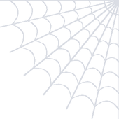
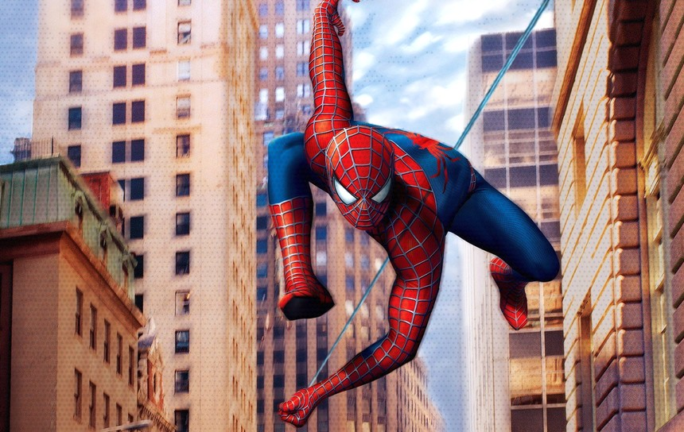

Grand Moon
DINER
SIXTH AVE. AT GRAND ST.
OPEN 6 A.M. TO 1 A.M.
OPEN 6 A.M. TO 1 A.M.
DAILY BUGLE
NEW YORK
50 CENTS
50 CENTS
WHO IS SPIDER-MAN?

Swinging over Sixth Avenue at lunch hour.Photo: P. Parker
House rule
Drop a tray? We catch it.
Every plate stays on it.
Friday, on the TV
Wrestling Night
BONE SAW VS. ALL COMERS
Eat a Bone Saw in three minutes, it's on us.
Clip and save
Free Coffee
One cup with any
breakfast order.
breakfast order.
Not good on Unity Day. No. 0503
Breakfast All Day
The Bone Saw3.00
Two fried eggs, melted American and hot sauce, wrapped in foil on a soft roll.
Buttermilk tall stack5.25
Fluffy pancakes cooked in butter, piled high, with warm maple syrup.
Two eggs any style4.50
Home fries and buttered toast, rye or white.
Western omelette5.75
Three eggs folded over ham, green pepper and onion. Home fries.